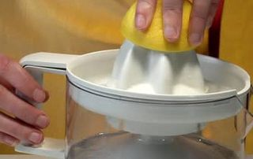
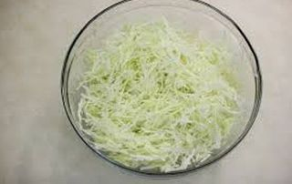
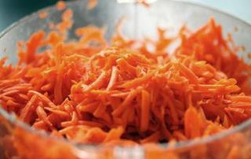
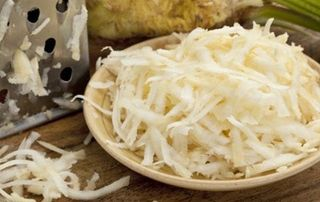
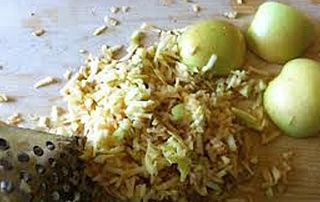
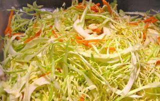

Шаг 1: подготавливаем лимон.

Для приготовления салата на самом деле нам нужен не сам лимон, а только его сок. Поэтому промываем цитрус под проточной водой и выкладываем на разделочную доску. Воспользовавшись ножом, разрезаем лимон на две половинки. Теперь из каждой части выдавливаем сок с помощью ручной соковыжималки. Свежевыжатого сока должно получиться примерно 100 миллилитров. Этого будет достаточно, чтобы заправить салат.
Шаг 2: подготавливаем капусту.

Удаляем с капусты огрубевшие верхние листья и после – слегка промываем овощ под проточной водой. Затем выкладываем его на разделочную доску и разрезаем кочан вдоль на две половинки. Затем каждую часть капусты шинкуем с помощью ножа на тоненькую стружку и сразу же перекладываем ее в глубокую миску. Добавляем в емкость немного соли и чистыми руками слегка мнем капусту, чтобы она дала сок.
Шаг 3: подготавливаем морковь.

Воспользовавшись ножом, очищаем морковь от кожуры и после – тщательно промываем ее под проточной водой. Выкладываем овощ на разделочную доску и натираем с помощью терки. Морковную стружку перекладываем в миску с капустой.
Шаг 4: подготавливаем сельдерей.

Корень сельдерея, с помощью ножа очищаем от кожуры и после – слегка промываем под проточной водой. Воспользовавшись средней теркой, натираем корень прямо на разделочной доске и сразу же перекладываем в емкость с другими измельченными ингредиентами.
Шаг 5: подготавливаем яблоки.

Яблоки хорошо промываем под проточной водой. Затем выкладываем фрукт на разделочную доску и ножом разрезаем на две половинки. Тем же острым инвентарем удаляем с компонента сердцевину и хвостик. Теперь воспользовавшись средней теркой, натираем половинки яблок, а стружку перекладываем в миску с другими овощами.
Шаг 6: готовим салат «Освежающий».

Итак, добавляем в миску с измельченными ингредиентами свежевыжатый лимонный сок и майонез, и с помощью столовой ложки хорошо все перемешиваем до образования однородной массы. Затем, ставим салат в холодильник охладиться, а чтобы он не впитывал в себя другие запахи еды, обматываем миску пищевой пленкой. Уже буквально через 1 час блюдо можно доставать из холодильника и подавать к столу.